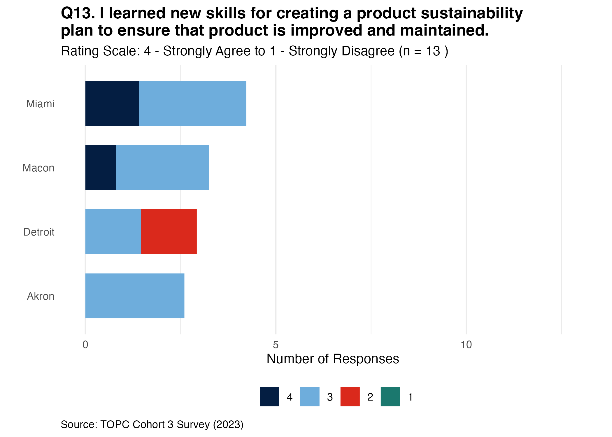
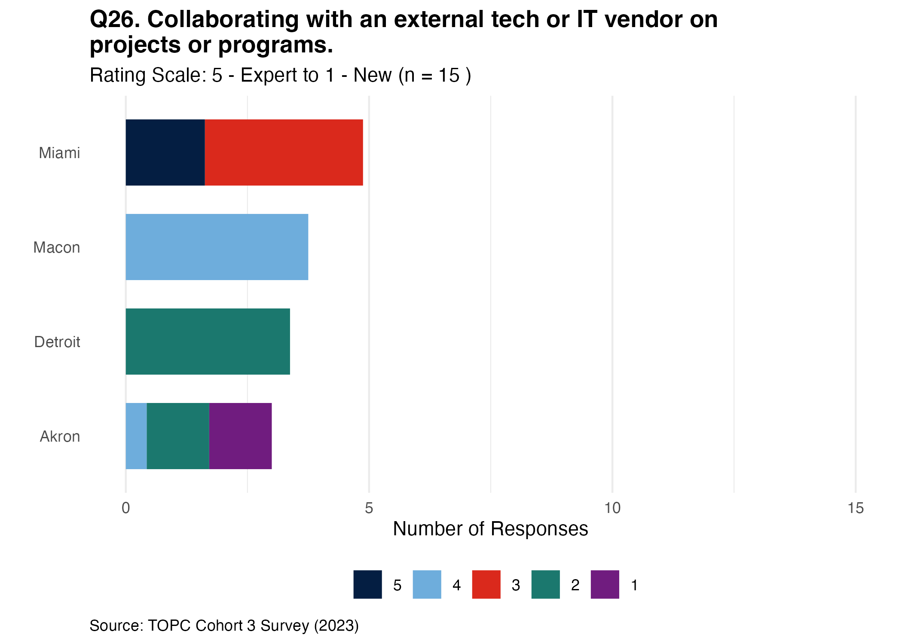

We would like to thank the Knight Foundation, the Beeck Center for Social Impact and Innovation, Center for Public Impact, Google.org, and all participating city governments and their community partners.
Your active engagement, insights, and commitment were pivotal in bringing this report to fruition.
Executive Summary
💡 To maximize critical thinking skill development across varying expertise levels, adapt the program with specialized tracks for new learners and advanced practitioners.
💡 To better align with participants’ pre-existing knowledge and reduce project timelines pressures, refine the program content to eliminate redundant content and introduce adaptive pacing.
💡 To prevent skill plateauing and foster continuous professional advancement, expand the curriculum with advanced HCD modules and a city maturity model.
Overview
This report provides insights and recommendations into the learning outcomes of Cohort 3 participants, city governments, in The Opportunity Project for Cities (TOPC) in 2023. It evaluates the program’s effectiveness in improving participants’:
Awareness and knowledge.
Competencies and confidence (self-efficacy).
Recognition and application of methods.
Intention to action and overall satisfaction.
Program Goals
The primary objectives of the TOPC program are to:
Enhance human-centered design, open data, and design sprint competencies across city governments.
Connect human-centered design principles and methods through peer-to-peer connections and community partnerships.
Deliver products and services grounded in practical strategies and approaches for solving a local challenge and implementing data-driven solution with the community.
Success Outcomes
This report aims to evaluate the initial outcome from the following performance metrics:
Increase in public servants’ capacity for community-centered digital innovation.
More effective government services and increased data use.
Improved government legitimacy.
Note
The above outcomes are derived from the benchmarks set by the Knight Foundation.
Evaluation Goals
Note
The following five evaluation goals aim to measure Outcome #1 of the Success Metrics: Increase in public servants’ capacity for community-centered digital innovation.
Goal 1: Increase participants’ awareness and knowledge of human-centered design principles to address local community challenges.
Goal 2: Increase participant competencies and confidence in the intersections of human-centered design methods, community research, product stewardship, and partnerships for addressing local community challenges.
Goal 3: Increase participants’ recognition and application of human-centered design and design sprint techniques in their work in collaboration with their department teams, community partners, and residents.
Goal 4: Measure participant satisfaction with program outcomes.
Goal 5: Measure participant intention toward action after the program.
Evaluation Questions
The evaluation questions that drive the analysis, insights, and recommendations are:
Goal 1: To what extent has the program improved participants’ awareness and knowledge of human-centered design in a local challenge in their communities?
Goal 2: How have participants’ competencies and confidence in understanding and applying the concepts of community research, product stewardship, and partnership improved to addressing local community challenges?
Goal 3: How has the program increased participants’ ability to recognize and apply methods and concepts in human-centered design and design sprints?
Goal 4: How satisfied are participants with the outcomes of the program?
Goal 5: What are the participants’ intentions regarding applying the knowledge and skills gained in the program, particularly after the end of the program?
Methodology
There is a total of 40 city governments employees who participated in Cohort 3 of the TOPC program in 2023.
9-15 participants (22.5-37.5%) engaged in evaluation activities.
The data collection methods are:
Structured evaluations through surveys and interviews at specific points in the program.
Ongoing feedback with an Insights and testimonials form throughout the design sprint.
Surveys
Surveys were collected and distributed via Google Forms. Learning session polls were collected and distributed Zoom polls.
Data cleaning, wrangling and analysis were completed in R. Reports generated via Quatro.
Descriptive and exploratory analyses were completed. Used sample design weights, stratification, and PSU (Primary Sampling Units) adjustments for robustness. Inferential analysis was not performed due to non-comparability in question design and response options between the pre- and post-test surveys.
Survey
Sample Size
Timing
Pre-test
15
Before program
Midpoint check-in
9
After 2-3 phases
Post-test
13
At the end of program
6-month follow-up
N/A
6-months after program
Learning session
4 - 18
At the end of every learning session
Semi-structured Interviews
Interviews were conducted and recorded via Zoom Conferencing.
Qualitative data analysis is currently being completed in atlas.ti. Reports generated via Quatro.
Closed coding is currently being completed for post-test interviews. A structured code book is being used. No pre-test interviews were conducted, limiting the ability to compare changes in participant experiences and journeys over time.
Interview
Sample Size
Timing
Post-test
9
At the end of program
Insights and Recommendations
💡 To maximize critical thinking skill development across varying expertise levels, adapt the program with specialized tracks for new learners and advanced practitioners.
💡 To better align with participants’ pre-existing knowledge and reduce project timelines pressures, refine the program content to eliminate redundant content and introduce adaptive pacing.
💡 To prevent skill plateauing and foster continuous professional advancement, expand the curriculum with advanced HCD modules and a city maturity model.
Insight #1
During the program, participants from various backgrounds engaged in a process to improve their skills in community engagement and digital product management. The positive shift in self-reported skills across multiple areas post-program suggests that the curriculum was effective in enhancing practical skills, such as community research, user testing, data evaluation, and managing digital products. However, participants experienced some challenges with stakeholder engagement, technology alignment, and the pressure of the sprint timeline.
The variability in participants’ prior experience led to differing levels of engagement and perceived value from the program’s offerings. Cities with less initial expertise, like Akron, saw more substantial gains, indicating that the curriculum was particularly beneficial for those at the earlier stages of skill development. Participants were motivated to enhance their skill set but required different levels of support and flexibility in the curriculum to accommodate their varying levels of expertise and experience. The program’s “one-size-fits-all” approach led to mixed outcomes, where some participants found certain elements redundant or less beneficial, while others experienced significant skill enhancement.
Recommendation
To address the diverse needs of participants, the program should provide a more tailored curriculum that offers flexibility and adapts to the varying skill levels of the participants. This could involve offering advanced modules for more experienced participants while reinforcing fundamental concepts for newcomers.
Additionally, fostering a hybrid collaborative environment that accommodates both in-person and digital interaction can help mitigate zoom fatigue. Managing expectations for “repeat” participants can enhance stakeholder engagement.
The program brings together diverse participants to collaborate on community-centered projects, with the aim of improving public service through digital solutions. The findings indicate a strong endorsement of the program’s structure and support mechanisms, with facilitation and peer learning highlighted as particularly beneficial.
However, some participants found aspects of the process, such as redundant training and bureaucratic hurdles, to be less helpful.
The repetition of content and the rigid structure of the program did not always align with participants’ existing knowledge (and expectations) and the dynamic nature of project development.
Participants were driven by the desire to create impactful community solutions but needed a more responsive and adaptive program structure to effectively leverage their skills and knowledge. The limited flexibility in the curriculum and the intense pace of the sprint sometimes created pressure and detracted from the overall learning experience, leading to fatigue and reduced effectiveness.
Recommendation
The program should streamline its content to avoid repetition and provide more advanced options for those with prior experience.
It should also introduce mechanisms and practical resources to navigate bureaucratic processes more smoothly and build in more timeline flexibility to account for setbacks. The recommendation is to evaluate and refresh the curriculum regularly, considering participants’ feedback to ensure relevance and engagement.
The program aims to foster a robust set of human-centered design (HCD) skills among participants to improve their ability to develop and manage community-facing products and services.
While participants’ self-reported skills improved in areas such as prioritizing product requirements and creating sustainability plans, some experienced a saturation point in their HCD skill development. There was also an indication that expectations for the program varied, affecting participants’ perceived value and engagement.
Participants with advanced HCD competencies reached a plateau in skill advancement, while others with less experience found the program to be significantly beneficial.
All participants sought to advance their competencies in HCD, but their different starting points meant that their learning goals and the program’s effectiveness varied.
Participants with higher levels of pre-existing HCD competencies found some elements of the program less beneficial, indicating a need for more advanced and differentiated learning paths.
Recommendation
For participants who have reached a higher order of critical thinking skills in HCD, the program should offer advanced opportunities for peer teaching and mentorship. This can prevent the plateau effect and ensure continuous professional growth.
Additionally, crafting a maturity model and defining an ideal city persona can help in customizing the program to better fit the needs of participating cities at different stages of HCD maturity.
The survey results suggest a positive shift in participants’ self-reported familiarity with community research skills after the program, especially in Macon where all participants agreed unanimously on this skill. The results indicate the curriculum’s effectiveness in equipping individuals with practical community research skills, regardless of their initial familiarity.
Survey data indicates a positive shift in self-reported user testing skills post-program. It suggests that participants believe the program has effectively taught them about user testing and applying feedback. The consistent responses in Detroit and the higher levels of agreement in Miami could reflect the quality of the program’s training and its impact on participants with varying initial expertise levels.
The data suggests that participants from all cities felt they learned about brainstorming strategies, improving from their initial self-assessed skill levels in creating wireframes or prototypes, irrespective of their initial experience with this skill.
This shift is particularly significant for Akron, which started with the lowest self-assessment.
The survey results indicate a positive trend in participants’ self-perceived skills in identifying and evaluating data to support digital solutions post-training, with all cities showing agreement or strong agreement on having learned new skills. Notably, Akron’s unanimous post-test agreement is a significant shift from the pre-test where there was considerable variability in self-assessment. This change highlights the program’s potential in equipping participants with practical evaluation skills, crucial for developing community-centered digital solutions.
The survey results indicate a general agreement among participants that they have defined a community role in service design, with Miami showing a stronger consensus on this capability. Notably, Akron shows improvement despite starting with less confidence. The change in standard deviation from pre-test to post-test across the cities suggests that the program may have had a harmonizing effect on participants’ self-perceptions of their abilities to engage with community members in the design process. The data implies that participants might be leaving the program with a more aligned understanding of their skills and roles.
The survey data reveals a positive shift across all participant cities in self-reported skills for prioritizing digital product requirements. Akron, which began with the lowest self-confidence, shows a notable increase in median score and a reduction in standard deviation, indicating a more unified positive self-assessment post-program. Detroit, while agreeing on learning new skills, exhibits a higher standard deviation post-program, suggesting a broader range of participant confidence levels. The data highlights the importance of starting with fundamental concepts for those with less experience and providing more advanced participants with opportunities to refine and expand their skills.
The survey results indicates improved self-reported skills in managing a community-facing digital product, particularly in Akron, where there was a notable increase in median scores and a decrease in variability of responses. In contrast, Detroit displayed an increase in response variability post-program.
These trends suggest the program was particularly beneficial to those starting with minimal expertise. The contrast in Detroit’s results could be indicative of a need to investigate the program’s varying impact or participants’ expectations versus their experience.
The survey results indicate improved participants’ skills in creating sustainability plans for digital products, particularly in Akron and Macon, where there is an improvement in consensus. Detroit’s varied results hint at unmet training expectations, while Miami shows a shift from a wide range of initial self-assessments to a more confident and uniform response post-program. These findings underscore a program to address the diverse starting points and learning needs of participants. However, the self-reported nature of this data could mean these observations indicate perceived learning rather than conclusive evidence of actual skill acquisition.

3. Participant recognition and application of methods
Application of methods is measured against one type of skill:
Partnerships, with community partners, internal stakeholders, and tech vendors.
The survey results suggests an improvement in participants’ perceived ability to collaborate with community organizations, with Akron showing the most significant increase in consensus. Detroit’s unanimous post-test agreement contrasts with the lack of pre-test variability data. Macon demonstrates a stable perception of skills. While the program had an impact in Miami, the extent of perceived skill enhancement varies among participants, possibly due to differing levels of engagement or prior experience. The program needs to cater to the varied needs and starting points of participants to maximize their effectiveness.
The survey results suggest a positive shift in participants across all cities building consensus and aligning long-term plans with internal stakeholders. While all cities started with a high level of self-reported expertise, the post-program data reflect a shared sense of skill enhancement. The reduction in SD in most cities post-training indicates a stronger consensus on these new abilities. These findings highlight the potential effectiveness of the program in improving collaborative competencies within city and county departments. Better-aligned teams ultimately benefit the communities they serve by fostering a more unified approach to public service.
The survey results indicate that participants’ confidence in collaborating with technical partners, especially in Akron, increased. Macon and Miami maintained their confidence levels with moderate agreement, while Detroit shows variability in participant responses, highlighting a potential area for investigation. The results suggest that this type skill can effectively increase the preparedness of individuals for technical collaborations, which is important for successful product delivery and launch with external vendors.

4. Participant satisfaction
Satisfaction is measured against recommending the program to peers with relevant findings:
Overall, participants across all cities would recommend the program to their peers, with Akron and Miami showing particularly strong endorsements. While the consensus is strong, there are some differing opinions on the strength of their recommendations.
Stakeholder engagement and preparation around ensuring commitment from internal partners, scheduling key stakeholders, and including community partners from the start.
Methodology and execution like aligning technology and user experience design early, maintaining consistent coaches, and simplifying ideas.
Collaboration and communication with more in-person meetings and including more technical expertise.
Resource and tool management by increasing familiarity with new tools and techniques and including more comprehensive workshops.
Interactive learning and engagement like in-person workshops, design phases, and the practice of creativity.
Program structure and support such as coaches, learning session facilitators, and the organic development process.
Collaborative Environment and Peer Learning: Involves learning from the experiences of other teams and effective communication within the group.
Redundant training and repetitive content with some content training was repetitive from previous sprints and not seen as beneficial. Familiarity with the design thinking process made some instructional meetings feel irrelevant.
Process management encounteredbureaucratic hurdles and the pressure of the sprint timeline.
Zoom fatigue and meeting management with concerns about the frequency of virtual meetings leading to fatigue.
Overall, the expectationsbefore starting the program reflect a diverse range of learning goals, from acquiring specific technical skills to developing a deeper understanding of government-community interactions and improving collaboration abilities. There is a notable emphasis on human-centered approaches, whether in technology design, community engagement, or interdepartmental coordination. These goals indicate a desire to be more effective in public-facing roles, ensuring inclusivity and responsiveness to community needs.
Q29. What are your personal learning goals for this project?
Q30. What do you hope your team accomplishes during this project?
“My hope is that we learn to work together and increase the practice of collaboration adds to success.”
“A product that is used by the residents it was intended to help.”
“A better understanding of our problem in order to provide continuing support for the issue.”
5. Intention to Action
The pre- and post-test surveys did not include questions designed to directly measure participants' intention to action towards HCD after the end of the program
Future iterations will incorporate such queries to gauge participant willingness to apply HCD methods and skills in their work after the program ends.
Limitations
Key Takeaway
The analysis, while supported by survey sampling weights, comes with inherent limitations. While these weights and other statistical techniques help make the sample more reflective of the broader population, it’s important to note that they cannot entirely compensate for all the limitations inherent in the data.
To interpret the findings within the context of these methodological constraints, qualitative data from interviews provide the nuances of uncovering participant experiences.
We strive for transparency and rigor, ensuring stakeholders are fully informed about the strengths and constraints of the findings.
Survey design data collection challenges: The pre- and post-test surveys had question design errors which contributed to bias. Thus, the evaluation relied on descriptive data analysis and interviews for identifying trends and themes. Qualitative analysis of open-ended responses provided insights into changes in participants’ experiences and perceptions.
Survey distribution and sample representation: Incomplete or varying methods of survey distribution may have impacted the representativeness of results. Application of survey design weights attempted to correct for potential biases in sample size and results.
Challenges in data analysis: Presence of a single primary sampling unit (PSU) in post-test data limited variance calculation. Alternatives like bootstrapping or jackknife methods were not used for causal inference due to it not being able to correct for existing bias in data collection.
Comparison of pre-test and post-test data: Pre-test and post-test surveys are conceptually aligned but differed in both questions and scales: a 4-point Likert scale for pre-test (focusing on agreement) and a 5-point scale for post-test (assessing expertise levels). Shifts in response distributions were analyzed using non-parametric methods, focusing on overall trends with descriptive statistics to compare before and after without inferring statistical significance. They are not directly comparable, which means means a direct comparison or change analysis like a t-test is not straightforward.
Nonresponse and uneven survey uptake across cities: Response rates varied notably, with about 15 responses for the pre-test and 13 for the post-test. Uneven distribution of responses across cities, such as only one pre-test response from a specific city, complicated the analysis.
Participant drop offs and inconsistent engagement: Role or organizational changes among participants led to data gaps, as those no longer in the program couldn’t provide follow-up information.
Weighted summary statistics. Median (standard deviation).
Caution
The weighted pre- and post-test summary statistics are not comparable because their questions and Likert scales are different. But, they provide general trends and patterns that are useful.
References
Contact Us
If you have questions or comments about this report, email Elham Ali, Researcher at the Beeck Center for Social Impact and Innovation, at elham.ali@georgetown.edu.